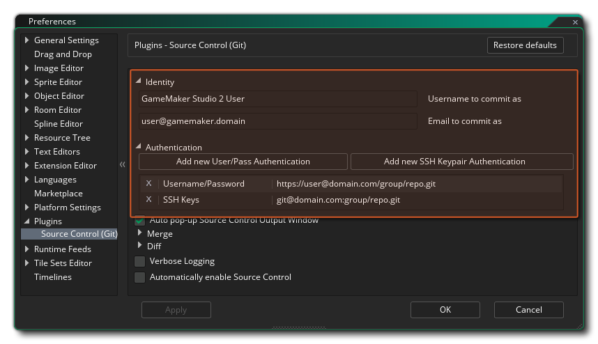
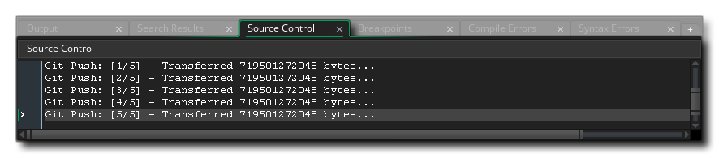

源代码管理（SCM） 是通过存储库和本地源代码在 子版本 工作或备份项目的方法的名称。基本上，SCM 解决方案是一个独立的软件包，它在你处理项目时控制项目维护、更改和比较的所有方面。这对那些在团队中工作并且需要能够控制谁做什么而不用担心丢失数据或可能需要在以后进行撤消更改的人尤其有用，但是个人也可以从系统这种强大而灵活的方面受益。
你可以使用各种 SCM 工具，GameMaker Studio 2 附带一个 Git 插件，可以立即使用，而且你无需安装任何额外的软件包，因为它与插件本身捆绑在一起。下面我们提供一个关于如何设置此插件的小教程，并将 SCM 工具与项目一起使用。在页面底部，我们还概述了 SCM 上下文菜单，这也在教程部分中引用。
首先，我们需要为 Git 设置一个提交身份，这意味着我们需要转到首选项的 插件 - 源代码管理（Git） 部分并添加你的身份验证详细信息。 
此身份验证标识将用于所有未来的项目，GameMaker Studio 2 为你提供了两种不同的设置方式：
- 用户名和密码：单击 “添加用户 / 密码身份验证” 按钮将显示以下窗口，你可以在其中输入 存储库 URL、用户名 和 密码：
如果你希望这仅影响 特定 存储库，则将存储库的 URL 放在顶部字段中。 但是，如果它是你想要的域范围身份验证（即：“bitbucket.org” 或 “github.com”），那么只需放置域名而不是其他内容。当某些东西需要检查身份验证时，它将首先查找特定的存储库匹配，然后 查找域匹配。 这将允许你对域进行默认身份验证，并在以后覆盖某些存储库的特定详细信息。
注意： 如果你使用的是外部存储库，那么你应该使用与为该存储库设置的帐户关联的用户名和密码，但如果你想使用本地存储库，则可以使用任何用户名和密码。
- SSH 密钥对：单击 “添加 SSH 密钥对身份验证” 将显示以下窗口，你可以在其中输入 存储库 URL 和 密码，然后提供所需的 公钥 和 私钥 文件的路径：
与用户名 / 密码身份验证一样，你可以在使用 SSH 密钥对时进行域和存储库特定的身份验证。 如果你已经生成了 SSH 密钥对，则可以在此处设置路径，以及访问它们所需的密码。 请注意，如果你需要快速访问公钥，复制按钮
将自动将内容复制到剪贴板。如果你还没有 SSH 密钥对，单击 创建秘钥对 按钮将弹出一个文件对话框，显示私钥的放置位置，并在其旁边创建公钥 - 这将自动为你填写公钥和私钥的路径。
在处理克隆、推送和拉取请求时，这些设置现在将用于与存储库（例如：Git Hub、Bit Bucket 等）进行通信。但是，你仍然需要设置每个项目选项，可以通过打开 主要选项 并单击 启用源代码管理 选项来完成。 这将激活当前项目的 SCM。一旦启用了源代码管理（并应用它或关闭了游戏选项），IDE 的顶部将出现一个新的上下文菜单，其中包含以下选项（我们将在本页的其余部分中介绍）：
注意：如果你需要再次编辑身份验证详细信息，只需双击该条目，将打开详细信息窗口供你编辑，但你将 无法 重命名该 URL。 如果你需要更改 URL，则需要删除身份验证详细信息并重新添加。 要删除身份验证详细信息，请单击 “偏好设置” 主窗口中该行左侧的关闭按钮。
你现在需要将 GameMaker Studio 2 IDE 链接到存储库：
- 创建项目存储库
- 将当前项目推送到外部存储库
- 克隆现有存储库
在第一种情况下，创建项目存储库，这将直接在项目所在的位置创建一个 Git 存储库。 在 Git 的说法中，这是一个 “非裸存储库”，因此在这种情况下 推送 / 拉取 没有任何意义，但你仍然可以提交并跟踪项目更改，并在需要时还原更改和修正。要进行此设置，只需在主菜单上单击 源代码管理 > 创建项目库 即可。
但是，你可能已经有一个现有项目，并希望将其放入 外部 存储库，以便在你的团队中进行跟踪和共享。这需要已设置外部存储库，以及在身份首选项中设置的正确用户名和密码才能访问它。 如果准备好了，请单击 源代码管理 > 将项目导入库中，然后填写 URL。
最后，作为便捷功能，你可以通过 IDE 克隆 外部存储库。 同样，你需要输入要在身份首选项中设置的存储库的用户名和密码，然后只需单击 源代码管理 > 克隆存储库 即可。 填写 URL（使用 HTTPS 变体而不是 SSH）并说出你想要的位置。
克隆完成后，它将自动打开文件浏览器，以便你根据需要打开项目。
当你处理项目时，你将自然地创建精灵、编辑脚本、删除时间轴，以及随着项目的不断发展所需的其他内容。 这些都是你可能想要跟踪的行为，如果出现问题则可以返回。这是使用源代码管理的主要原因 - 以便可以恢复任何事故 - 我们将从一开始就快速引导你完成基本工作流程，以便你了解其工作原理。
从头开始，创建一个新的 GML 项目，然后通过主要选项激活源代码管理。这使我们可以访问顶部的源代码管理菜单，因此我们将立即启动 创建项目库。如果你查看房间资源，你可以看到默认房间已经拥有红色感叹号
，这意味着它已经从它的最后状态进行了修改。 如果我们在项目中有其他资源，你会看到它们都具有相同的图标，如下图所示：
我们现在可以选择提交空白项目，也可以将其设置为基本状态。现在，我们将进行第一次提交，然后单击 源代码管理 > 提交更改。我们将获得一个被分为三个区域的窗口：
- 提交更改 - 这表示将提交给源的更改。这可能是空白的，但它可能会显示主选项更改，这很好。
- 不提交更改 - 显示已更改的文件，但我们没有告诉 Git 我们要提交它们 - 它们是 “待定” 更改。
- 提交消息 - 这是我们可以添加的注释，用于解释更改的内容。
现在，单击 提交所有 按钮，因为我们要提交所有更改，并在提交消息内输入类似 “首次提交！” 的内容并单击 提交。 我们所有的资源现在都应该有绿色勾号
，这意味着没有找到任何修改。
我们的工作流程现在可以开始，我们可以开始构建我们的项目并保存和提交更改，就像我们在上面的段落中所做的那样。
工作一段时间后，你可能希望检查并查看你在任何给定时间所做的事情，因此你需要打开 提交历史记录要打开历史记录窗口，只需转到 源代码管理 > 查看历史记录，打开另一个包含三个窗格的窗口：。
顶部窗格描述了提交，中间窗格描述了为选定提交提供的注释，底部窗格描述了在此提交中已修改的文件。请注意，如果你已设置了 差异工具，则双击此窗口中的任何文件将打开差异工具，你将能够看到文件之间的更改。
上面你已经看到了如何创建一个存储库并向它提交，但是如果你犯了一个错误并想要 “回滚” 到之前的提交会发生什么呢？让我们故意做一个错误，然后看看我们如何处理它......
首先创建一个新资源 - 在这个例子中我们将创建一个脚本资源 - 最初你将看不到状态图标，因为就源代码管理而言它还不存在。在脚本资源中添加一行简单的代码，如：
show_debug_message("Hello World");
如果现在关闭代码编辑器，脚本将保存，修改后的文件图标
可提交更改如下：
- .yyp 项目文件
- 视图文件（view file）
- GML 脚本本身
- 引用脚本的 .yy 文件
你应该输入提交消息，然后单击 提交 按钮，就像我们之前解释的那样。 现在，我们回到脚本并将代码行更改为（例如）：
show_debug_message("Hello World, how are you?");
当我们关闭代码编辑器时，脚本旁边会再次显示一个红色图标，但我们已经意识到我们的代码出错了，我们想回滚到以前的版本来修复它（显然，你可能只是打开脚本并轻松修复它，因为示例非常简单，但在大型项目中通常不是一种可行的方法）。 我们需要做的是 恢复 我们的更改。
要还原更改，我们首先需要再次打开提交窗口，因此我们再次进入 源代码管理 > 提交更改。 我们更改的文件将再次准备好进行提交，但这不是我们想要的，所以我们单击 不提交所有 按钮将其从暂存区域中取出。
如果我们现在右键单击
我们更改的文件，我们将获得一个上下文菜单，其中包含 还原路径 选项：
选择此选项后，你将文件还原为它们所处的先前状态。
重要！ 当你还原时，由于文件检查器检测到磁盘上的更改，你将收到一条消息，要求你重新加载或保存当前项目：你 必须 点击 重新载入 而不保存，因为保存将保存内存而不是重新载入恢复的文件。
这对于编辑某些内容并且想要在没有执行提交的情况下进行更改时非常有用，但是当你提交了一个或多个更改并希望回滚到之前的提交时呢？ 那么，让我们再次编辑我们的脚本：show_debug_message("This is a bad idea");
现在我们像以前一样提交它以使其受源代码管理。所以，这是一个坏主意并且我们想要回滚，这意味着首先我们需要再次打开源代码管理 > 查看历史 窗口。我们将在此窗口中看到所有先前提交的列表，从初始提交，脚本提交开始，然后提交我们编辑为 “bad idea” 的脚本：
我们现在有两个选择。 我们可以还原整个修订版本 - 这将修改 所有 已更改为所选提交文件的文件 - 或者我们可以选择还原路径 - 这将只恢复单个文件。让我们做第一个选择：
- 右键单击
- 选择 还原到这次修订，然后在警告消息上选择 重新加载。
你应该看到脚本现在有一个红色状态图标
然后我们可以对项目进行提交，我们将再次回到原来的位置。 但是，我们也可以撤消该文件的操作，并通过执行以下操作让我们的 “坏主意” 提交回来：
- 打开 提交更改 窗口。
- 选择不提交 "Hello World" 代码脚本。
- 右键单击
现在我们又回到了项目中的错误文件！ 好吧，我们可以借此机会仅恢复该文件路径，而不是将所有内容都重新修改为以前的版本。 为此我们需要做以下事情：
- 打开 查看历史 窗口
- 单击第二个提交（“Hello World”提交）。
- 右键单击
我们将会回到我们的 “Hello World” 代码，然后我们可以再次使用更正的文件更新源代码管理。
当你的项目存储在外部存储库中时，你需要记住 推送（push） 更改并 拉取（pull） 任何新更改。这样做的原因是，当你提交时，你可以在本地存储更改，这样你就可以远离网络连接并在准备就绪时进行同步，并且可以同步将更改推送到远程存储库。拉取更改意味着你希望将其他人从远程存储库中所做的任何更改提取到本地存储库中。但是，这意味着有时候人们可以编辑 相同 的文件，从而产生 合并冲突。你需要知道如何处理这些冲突，所以我们现在要刻意创建一个，然后告诉你如何处理它。
注意：不建议共享本地项目存储库（甚至通过像 Dropbox 这样的文件同步服务），因为提交通常直接写入它，因此你几乎没有冲突保护。
为了产生我们的冲突，我们首先需要有两个本地存储库，一个用于主存储库，一个用于我们的副本。要创建它，我们需要 克隆 存储库，这是通过以下步骤完成的：
- 转到 源代码管理 > 克隆存储库。
- 在URL字段中，键入我们在上面的 “还原文件” 指南中设置的项目的路径（默认情况下，这将是 C:\Users\<用户名>\Documents\GameMakerStudio2\<项目名称>）.
- 然后，你需要设置克隆到的路径：
当你单击“确定”按钮时，你将收到有关尝试克隆 “非裸” 存储库的以下警告：
你可以再次点击“确定”。
- 现在，你将看到一个目录资源管理器创建了一个 “裸” 代理存储库（例如，这是一个 可以 安全地存储在 Dropbox 上的存储库）。浏览到要创建此代理存储库的位置，然后选择（或创建）要使用的文件夹。
完成后，GameMaker Studio 2 会将原始项目推送到代理，然后将新项目拉到你在克隆存储库窗口中设置的路径，然后自动打开文件浏览器，以便打开存储的项目。 如果你现在转到 源代码管理 > 查看历史，我们将看到我们的原始提交以及新的 “推送克隆”：你现在已经克隆了存储库，可以继续处理项目的本地版本。
在本节中，我们将讨论解决克隆的本地存储库和主存储库之间的冲突（有关更多详细信息，请参阅克隆部分）。 假设你现在正在使用本地存储库，我们需要编辑一个文件然后导致某种冲突，因此打开我们一直使用的测试脚本并将 “Hello World” 消息更改为以下内容：
show_debug_message("Hello World, How Are You?");
你现在应该保存项目并将其提交到本地存储库。 现在，由于我们链接到远程主存储库（即使它是我们克隆到同一磁盘的存储库），我们需要执行 推送 以更改主存储库。为此，请转到 源代码管理 > 推送更改，这将在源代码管理 输出选项卡 中为我们提供状态更新： 
我们现在需要打开我们的 原始 项目（而不是克隆的项目），因此浏览到将其保存在磁盘上的位置 - 或者只需检查 文件 菜单中的 最近项目，因为它应该直接在当前项目下 - 并将其加载到 GameMaker Studio 2。一个检查你的项目是正确的简单方法是检查你的脚本，如果消息是 “Hello World”，那么你的项目是正确的，或者你可以打开 查看历史 窗口并检查。
你现在需要再次编辑脚本，因此请修改为：
show_debug_message("This will cause a conflict.");
这可以保存到磁盘，并提交更改，但如果你尝试推送这些更改，你将收到以下消息：
有人已经推送了你还没有的变化！ 这意味着你需要对存储库进行拉取并查看问题究竟是什么，因此请转到 源代码管理 > 拉取更改。这将显示两个窗口，第一个是关于已更改文件的警告（与之前的操作一样，你希望选择此处 重新加载 而 不是 保存），另一个是 “冲突” 窗口：
此窗口将在左侧列表中显示冲突的文件，你可以使用鼠标左键
从该列表中选择文件（或使用
+
- 使用他们的 - 这将覆盖你使用远程存储库中的更改所做的更改。
- 使用我的 - 这将取消远程存储库中你刚刚创建的更改。
- 合并 - 这将尝试打开外部合并工具来处理冲突。
- 选择合并工具 - 这将允许你配置合并工具（有关详细信息，请参阅下面的使用外部合并工具一节）。
现在，你可以使用按钮来解决冲突，但在此之前，让我们打开冲突的文件以确切了解问题所在。 如果你打开冲突的脚本，它现在将如下所示：
在 HEAD 文件将显示 “This Will Cause A Conflict”（这是我们推送到本地存储库）和从远程存储库 master 中拉取的 “Hello World，How Are You？”。你可以立即返回 冲突 窗口，然后单击 使用他们额 以拉取已更改的文件并覆盖当前的 HEAD 文件。 该脚本现在将被标记为已更改，你应该在继续之前执行新的提交和推送。
请注意，我们可以在 GameMaker Studio 2 IDE中实际修复此问题。 如果我们删除第 1、2、3、5 行，那么我们只剩下 show_debug_message("Hello World, How Are You?") 并保存它，它将清除冲突，因为 Git 会认为你知道你在对你自己的文件做什么。 它容易出错，因此建议安装合并工具，然后配置并使用它，而不是手动尝试合并。
当你与其他人一起处理项目时，总会有可能发生冲突，因为多人编辑同一个文件，并且大多数源代码管理系统可以很好地尝试合并任何冲突的文件，但是当在同一个地方有变化时 ，它需要一些帮助才能知道该做什么 - 此时 合并工具 将向你展示更改的地方，让你自己决定。
由于每个合并工具都不同，因此有四个宏可用于指定文件，可以通过从 冲突 窗口单击按钮 选择合并工具 设置文件：
当你单击该按钮时，将在 Git 插件上打开 偏好设置 窗口：
在这里，你提供了所选合并工具的路径，然后提供了一个 合并工具选项 宏，以便在决定要执行的操作时使用以下选项：
- ${scm_mine}: 你的版本的路径
- ${scm_thers}: 其它版本的路径
- ${scm_base}: 发生冲突更改之前的版本路径
- ${scm_merged}: 合并工具应保存到的路径
作为设置的帮助，当你提供某些合并工具的路径时，GameMaker Studio 2 将填写一些默认值以开始使用，具体取决于所选的工具：
- KDiff3： ${scm_theirs} ${scm_mine} -o ${scm_merged}
- Meld： ${scm_mine} ${scm_merged} ${scm_theirs}
- Notepadd++： ${scm_merged}
- TortoiseMerge： /base:${scm_base} /theirs:${scm_theirs} /mine:${scm_mine} /merged:${scm_merged}
请注意，如果你没有（或不想使用）合并工具，则可以在 IDE 中打开脚本并尝试从那里（手动）修复它。
所以，回到我们的示例冲突，如上面关于冲突的部分所述... 你已经从 master 完成了拉取，其中一个文件是冲突的。这将打开 “源代码管理冲突” 窗口，你可以在其中单击冲突的脚本，然后单击 “合并”，因为你已配置了合并工具。现在单击合并将打开你可以处理冲突的工具，然后使用提供的宏来进行所需的更改。完成并关闭合并工具后，GameMaker Studio 2 IDE 将显示以下确认窗口：
只需对此提示回答 “是”，因为你刚刚使用合并工具完成此操作，然后你需要提交此更改以表示合并操作的结束（ 源代码管理 > 提交更改。提交窗口现在将显示合并正在进行中以及显示一些未提交更改的文件：
这些未提交更改的文件是我们的脚本文件，添加了.base、.ours 和 .theirs。 我们可以安全地删除所有这些，因此请单击
你现在可以单击 提交。
由于你可能存在其他文件的问题，这意味着使用远程或共享存储库时的工作流程应如下所示：
产生更改 > 保存 > 提交 > 拉取 > 合并 > 推送
你还应该设置一个差异工具（Diff Tool），以便在提交到存储库时使用。这是从 偏好设置 设置的，与合并工具相同：
差异工具的配置方式与合并工具的配置方式大致相同，但仅使用 ${scm_base} 和 ${scm_theirs} 选项 - 在这种情况下，${scm_base} 表示未修改的文件，而 ${scm_theirs} 表示当前文件的状态。 工具选项 应预先填充 Meld、KDiff3 和 TortoiseMerge 的默认选项，就像它们用于合并工具一样。请注意，GameMaker Studio 2 不支持输出单个文件差异补丁，因此 Notepad++ 没有默认值。
要使用差异工具查看当前和以前版本之间的更改，只需打开 提交 窗口，然后双击文件。如果工具设置正确，它将启动，你将能够看到文件之间的更改。


源代码管理上下文菜单
当你为任何项目激活源代码管理时（有关详细信息，请参阅上面的 设置源代码管理 Git 插件 一节），GameMaker Studio 2 将在顶部显示以下上下文菜单： 
在这里，我们概述了每个可用的选项（其中大部分在上面的教程部分中有更深入的解释）：
- 创建项目存储库： 此选项允许你在与项目文件相同的目录中创建本地存储库。
- 将项目导入存储库中： 此选项允许你将项目导入外部存储库。
- 克隆存储库： 此选项允许你将存储库从源代码克隆到新目标。
- 提交更改： 使用此选项，你可以在项目中暂存已更改的文件，然后将它们提交到存储库。
- 推送更改： 执行提交或合并后，此选项用于将更改推送到主存储库。
- 拉取更改： 使用此选项，你可以通过从主存储库中拉取已更改的文件来更新本地存储库。
- 查看历史： 这将打开历史记录窗口，你可以在其中查看项目的所有版本历史记录，并选择回滚特定文件路径或整个修订版本。
- 显示冲突： 这将打开 “冲突” 窗口并列出项目中可能存在的任何冲突文件，允许你通过 GameMaker Studio 2 IDE 或使用特定的 合并工具 来处理它们。